本文将介绍锦文集web端课件制作使用方法，平台兼容IE/Chrome/FireFox等主流浏览器。
1、首先应是以注册身份登录，如果您还未能注册，为了可以享受更多功能带来的体验请点击这里注册后进行下一步。
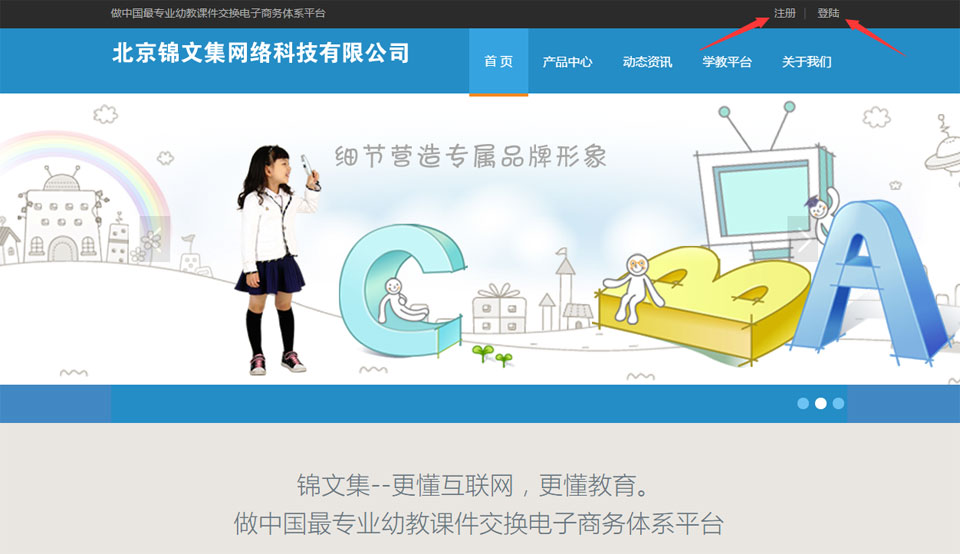
2、输入用户名、密码登录您的账号
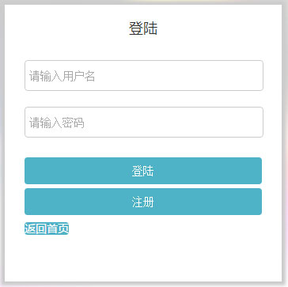
3、登陆后就可以开始使用制作课件了，单击“添加互动课件”按钮
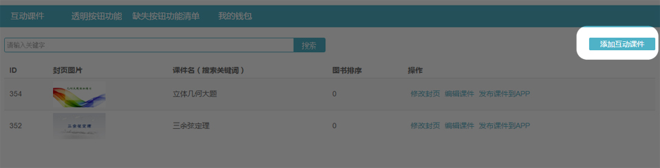
4、填写书名、价格、上传封页图片（注意全部为必选项）
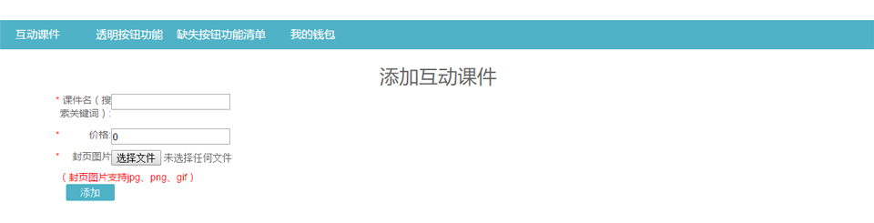
5、编辑课件
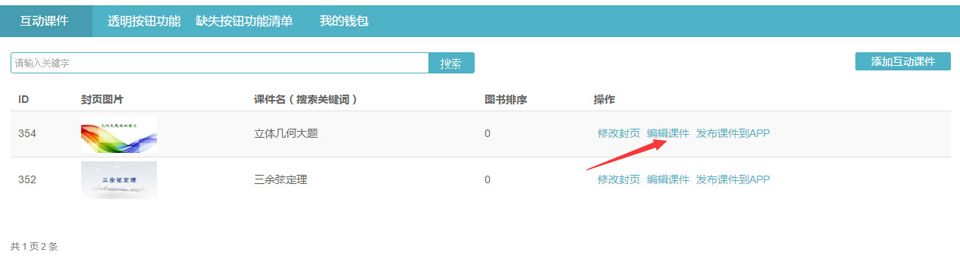
6、添加一页
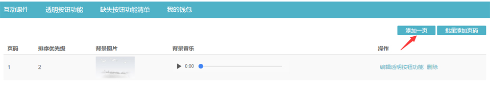
7、填写排序优先级、背景图片、背景音乐（注意排序优先级、背景图片为必选项）
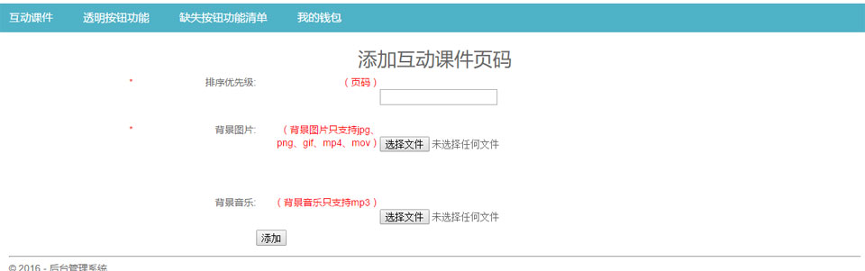
8、编辑透明按钮功能（注意排序优先级、背景图片为必选项）
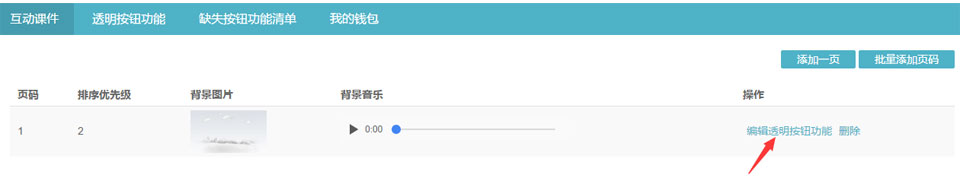
9、输入想要的功能名（也可以从右侧搜索看看其他老师共享资源）也可以上传自己的文件形成独特的按钮功能。
（透明按钮功能和上传文件相关；支持jpg、png、gif、mp3、mp4、mov、http文件。）
（透明按钮功能名不能重复，建议使用username-name格式。）
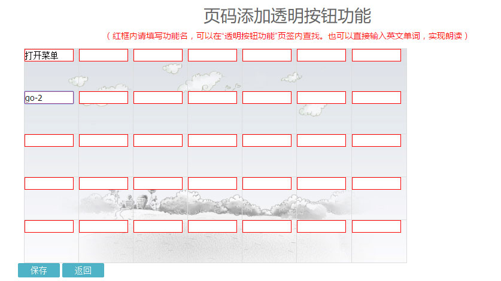
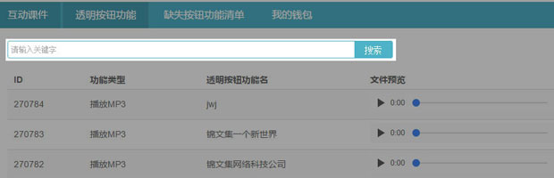
10、编辑完成后保存。（注意：个别浏览器提示“禁止此页显示对话框”请不要禁止。）

11、返回编辑课件页；返回图书列表页，待全部完成后返回到首页点击“发布课件到APP”（发布1分钟后就可以在手机端搜索到了）
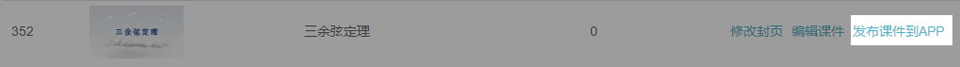
以下将介绍在手机端如何看到刚刚发布课件
12、下载APP到手机，如果您是安卓系统手机点击这里下载最新版。如果是苹果系统手机，请到应用商店搜索“锦文集”。请注意：修改课件后，为防止数据冲突请清空手机中的jinwenji文件夹，内部冲突会导致白屏。
打开“锦文集”APP,首屏默认展示十个课件
13、处于“首屏”状态下，向右滑动即可打开搜索功能，点击“搜索”输入欲检索的字段。
14、在搜索结果中找到发布的图书，点击进入。注意：修改课件后，为防止数据冲突请清空手机中的jinwenji文件夹。进入图书（可以选择是否一次下载全部内容,缓存到手机）
15、现在可以任意浏览您刚刚创建的课件了，试试点击您制作的透明按钮区域，是不是已经产生效果了！
位于左上角1号位置，被固定为“打开功能菜单”。在您课件首页从右滑动也可以激活“打开功能菜单”。
点击“退出”即可退出当前课件浏览